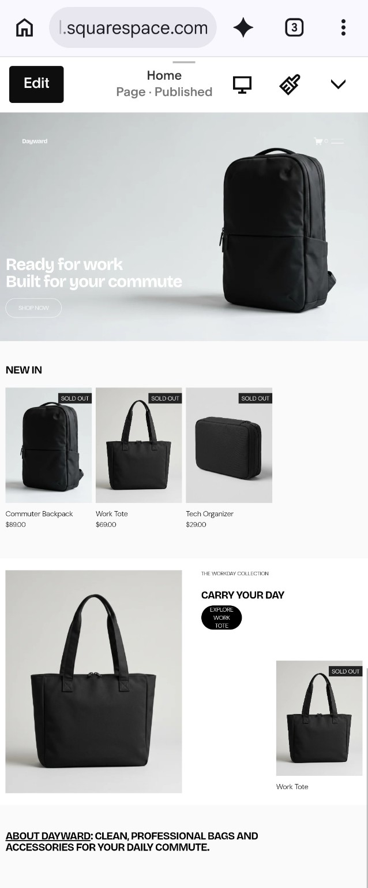
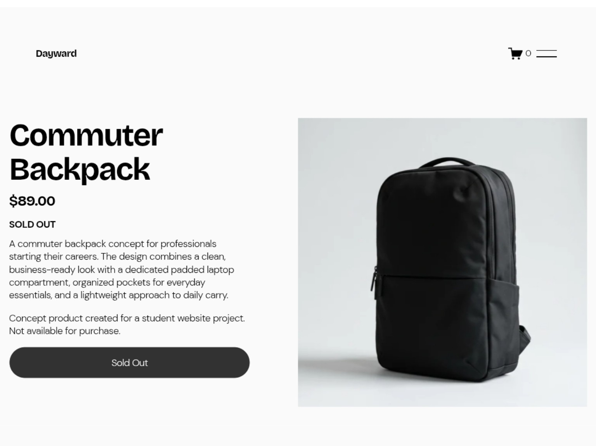
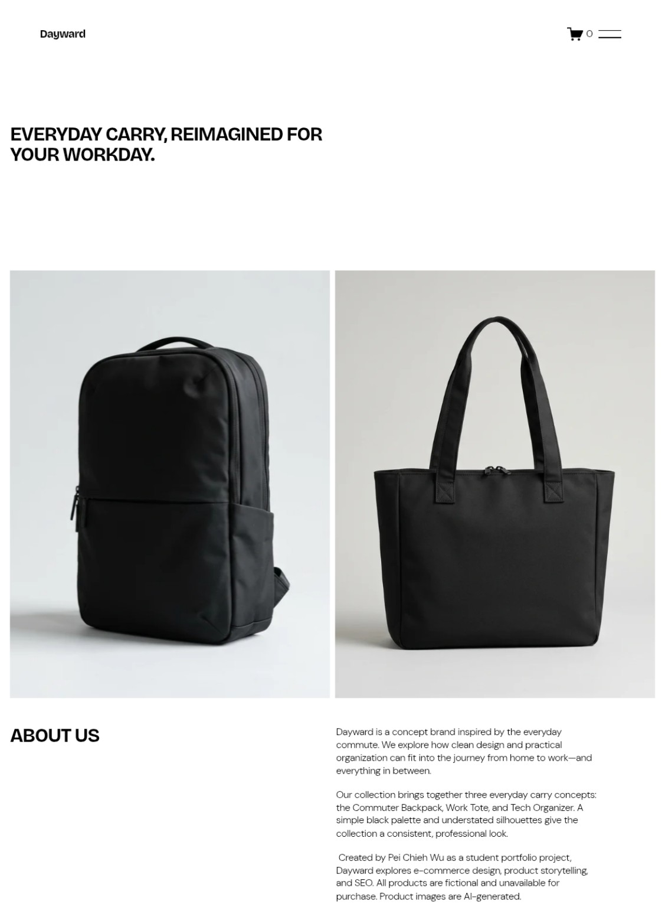
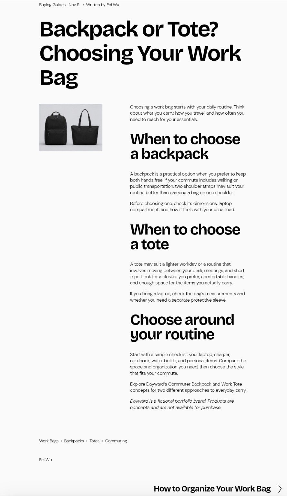
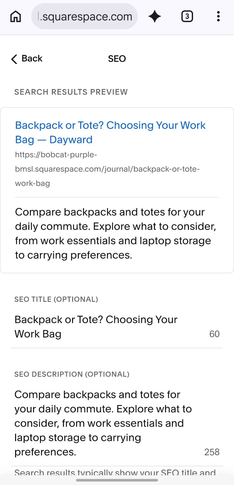
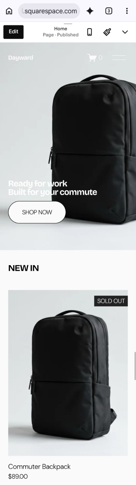
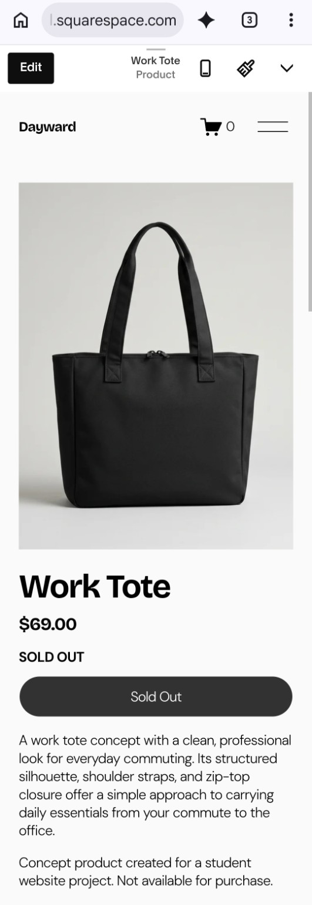

Dayward.
An everyday carry concept for the journey from home to work.
I customized a Squarespace template to create a fictional bag and accessories brand for early-career professionals, connecting product storytelling with useful commuting content.

A collection with a clear audience.
Dayward centers on three concepts: the Commuter Backpack, Work Tote, and Tech Organizer. A black, white, and gray palette keeps the products visually consistent.
I customized the Home, Shop, About, Journal, and Contact pages, and developed and edited copy with AI assistance. The product pages describe the intended use of each concept and make its fictional status explicit.

View the About page

Answering everyday carrying questions.
I created two articles: Backpack or Tote? Choosing Your Work Bag and How to Organize Your Work Bag. Topics were chosen around commuting decisions and everyday organization, with links to relevant product concepts.
I configured descriptive URL slugs, SEO titles, and meta descriptions. The example below connects a comparison article with the practical questions it addresses.


The same collection, a smaller screen.
I reviewed desktop and mobile previews and adjusted the placement of images, text, and buttons. These captures show the homepage and Work Tote product page in mobile preview.


A complete concept, documented.
The project produced three concept product pages, two blog articles, and supporting brand pages. Working in Squarespace gave me practice connecting a brand message, product information, and on-page SEO while adapting layouts across previews.
One practical lesson was to plan for preservation early: these screenshots document the work independently of the trial site.
Dayward is a fictional portfolio brand, customized from a Squarespace template. AI assisted with product imagery and drafting content; I directed the concept, edited content, configured the website, and reviewed its layouts. Products are not available for purchase.
The website was built in a trial environment. Search indexing, rankings, traffic, conversions, checkout, and email subscription delivery were not validated. Screenshots document the configuration and appearance; they do not demonstrate marketing performance.